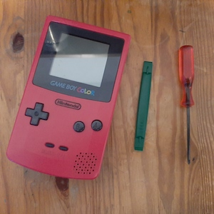

Replacing the screen of your Nintendo Game Boy

Disassembling the console
- Remove the game cartridge from the slot. Open the battery compartment and remove the batteries.
- Remove the six triwing (Y-type screwdriver needed) screws located at the top and middle of the back case and inside the battery compartment.
- Separate the front and back case halves. Be extra careful not to pull the cable ribbon that connects both parts. Detach the ribbon carefully.
- Remove the ten Philips screws holding the mainboard to the front case. Carefully take the mainboard out of the case.
- Detach three plastic clips on the backside of the board and remove two Philips screws on the front, below the screen.
- Desolder the display connectors from the mainboard.
Reassembling the console
- Solder the display connector to the mainboard.
- Fasten the two screws below the screen and reattach three plastic clips on the backside of the mainboard
- Put the mainboard carefully inside the front case and screw in ten Philips screws holding the mainboard.
- Reattach the main cable ribbon to the back casing and put the case halves together.
- Fasten the six triwing screws inside the battery compartment and on the back of the case.
- Reload three AA-size batteries, close the compartment cover, and insert your favorite game cartridge to play!